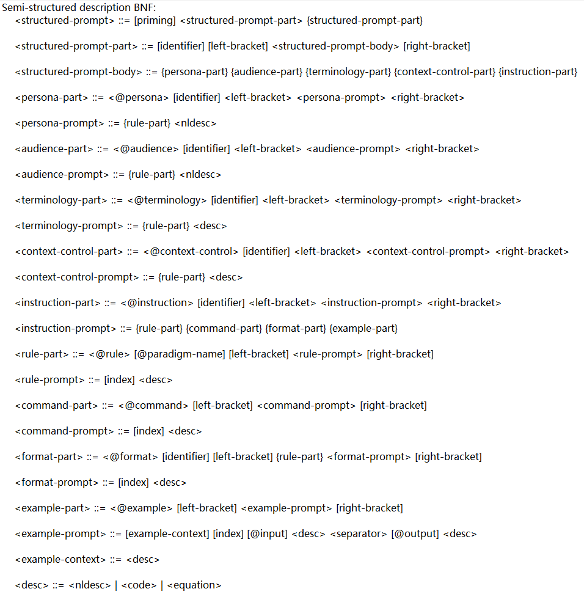

Structured Prompting Language
A language between natural language and programming language, analogous to the intermediate bytecode in between high-level programming language and machine instructions
Structured Prompting Language BNF
To address the challenges posed by the expressive burden and cognitive load of natural language, people have begun to employ structured thinking by organizing prompts in a structured format. For instance, this involves using bullet points or dividing information into distinct sections. This approach is more intuitive and aids in both articulation and comprehension compared to using natural language expressions. However, because structured thinking is closely tied to the specific implementation of prompts in particular applications, effectively applying it to other specific scenarios remains challenging.
When individuals write structured prompts, they might adopt various approaches, making it difficult to determine the optimal method. Consequently, people have started to distill guiding prompt techniques, including certain prompting patterns, to serve as best practices for composing structured prompts. Inspired by this notion, these prompting patterns can be utilized to guide the creation of structured prompts.
In response to these challenges, we propose a standardized, universal, and instructive language termed "Structured Prompt Language" (SPL) for crafting structured prompts. Our approach unfolds as follows:
1.Building upon widely proposed prompting patterns, we expand and consolidate various crucial aspects for effective prompt creation. These aspects are transformed into practical keywords that subtly guide users in producing high-quality structured prompts.
2.To define the syntax and semantics of SPL, we employ Backus-Naur Form (BNF) to organize keywords and their hierarchical structure. For instance, here are two examples of SPL definitions:
"instruction-part ::= @instruction [identifier] left-bracket instruction-prompt right-bracket"
"instruction-prompt ::= {command-part} {rule-part} {format-part} {example-part}"
These expressions elucidate that the SPL keyword "instruction" encompasses parts such as "command," "rule," "format," "example," and more. This prompts users to contemplate the specific functionalities to include in the prompt and explicitly outline the steps, constraint rules, output format, and multiple examples for each functionality.
By adopting this approach, we can more effectively tackle the expressive and cognitive load associated with natural language. Through the utilization of SPL, individuals can systematically compose structured prompts, thereby enhancing the quality and accuracy of prompts. This approach empowers the application of structured prompt advantages across diverse scenarios.
Generally speaking, SPL is a standardized, general-purpose, and instructive structured prompt language. By converting existing prompt patterns into practical keywords and using BNF-organized prompt structures, SPL provides a clear syntax and semantics for structured prompt production. Can show significant advantages in reducing expressive and cognitive load.